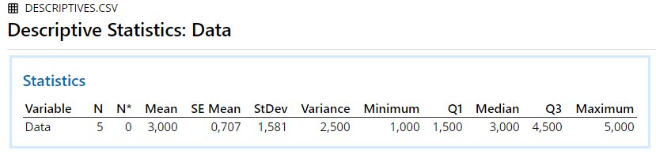

Chapter 2 Descriptives
2.1 Descriptives
An example from Kerlinger (1969, pp. 93-95):
| Data |
|---|
| 1 |
| 2 |
| 3 |
| 4 |
| 5 |
2.1.1 Results Overview
| By Hand | JASP | SPSS | SAS | Minitab | R | |
|---|---|---|---|---|---|---|
| Mean | 3.0 | 3.000 | 3.000 | 3.000 | 3.000 | 3.000 |
| Variance | 2.5 | 2.500 | 2.500 | 2.500 | 2.500 | 2.500 |
| Median | NA | 3.000 | 3.000 | 3.000 | 3.000 | 3.000 |
| Standard Deviation | NA | 1.580 | 1.580 | 1.580 | 1.580 | 1.580 |
| SE(Mean) | NA | 0.707 | 0.707 | 0.707 | 0.707 | 0.707 |
2.1.2 By Hand
Calculations by hand can be found in Kerlinger (1969, pp. 93-95).
Result:
Mean = 3
Variance = 2.5
Note: Kerlinger calculated the population variance, however as all statistical software computes the sample variance, the formula was adapted accordingly to be divided by N-1.
2.1.3 JASP

Figure 2.1: JASP Output for Descriptives
2.1.4 SPSS
DATASET ACTIVATE DataSet1.
DESCRIPTIVES VARIABLES=Data
/STATISTICS=MEAN STDDEV VARIANCE MIN MAX SEMEAN.
Figure 2.2: SPSS Output for Descriptives
2.1.5 SAS

Figure 2.3: SAS Output for Descriptives
2.1.6 Minitab

Figure 2.4: Minitab Output for Descriptives
2.1.7 R
## [1] 3## [1] 1.581139## [1] 2.5## [1] 3## [1] 0.70710682.1.8 Remarks
All differences in results between the software and hand calculation are due to rounding.
2.1.9 References
Kerlinger, F. N. (1969). Foundations of behavioral research. New York, US: Holt, Rinehart and Winston, Inc.